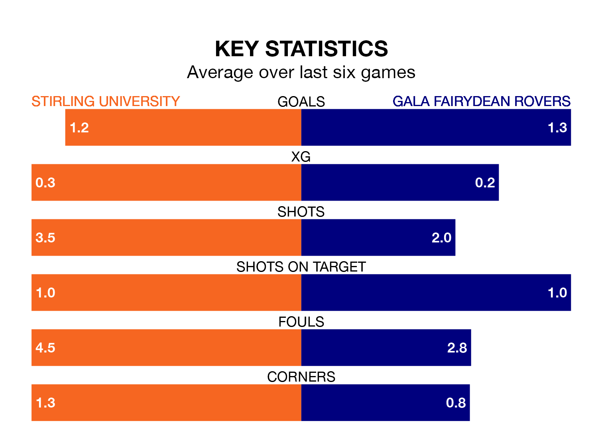

Gala Fairydean Rovers make the journey to the Forthbank Stadium to play Stirling University on Saturday looking to pick up points to end their four-game losing streak.
Gala Fairydean's struggles have left them with just three points from their last six Lowland Football League matches, while their opponents have earned eight from a possible 18.
In the last 10 years, Stirling University and Gala Fairydean have played each other on 17 occasions. Stirling University won 10 of them, Gala Fairydean four, and they drew three times.
On average, Stirling University scored 1.6 goals and Gala Fairydean 1.2 in those matches.
Their last meeting was on February 20, when Gala Fairydean won 2-0 at home.
Gala Fairydean are 15th in the table after 30 games, of which they have won eight and drawn four, earning 28 points.
Stirling University are six places ahead of Rovers in ninth, with 12 wins and six draws putting them on 42 points.
With 42 goals in 30 games so far this season, the visitors are scoring at below the league average rate with 1.4 goals per game. And they are conceding more than average, letting in 82 goals at a rate of 2.7 per game.
The home side are also below average scorers, with 1.4 goals per game, compared to a league average of 1.7. They have conceded 1.3 goals per game.
Stirling University's last match was on March 9, a 0-0 draw against Edusport Academy.
Gala Fairydean lost 7-2 against BSC Glasgow last time out, also on March 9.
Updated: 15:10 (UTC), 15/03/24